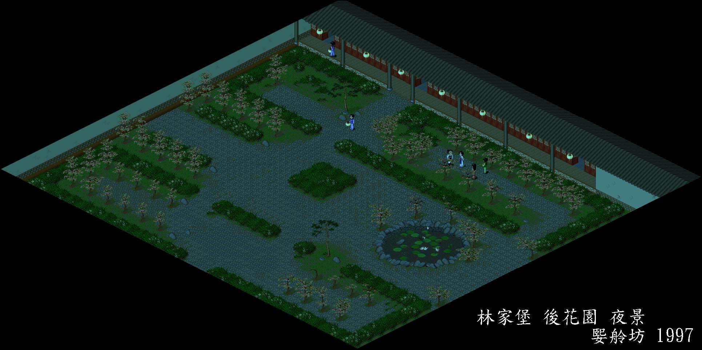

大宇出品 必屬佳作
必屬佳作
林家堡後花園 夜景
|  |
費時數十年,耗資千萬的林家堡後花園終於完成了!!!!
網友們是否十分感動呢??想知道製作的過程嗎??
場景組合流程
1.選景:先選好山明水秀,動線不複雜的場景.
2.抓圖:每走幾步抓一張,一個場景要抓幾十張耶!!
3.組合:用PhotoShop一張一張貼,接合處是很難接得好的.
4.消李逍遙:組合好之後,會有很多個李逍遙(有的還被切得只有頭),這時就要用別張的空白來消.
5.加裝飾:如提燈的婢女,賞花的月如......等等.
6.補邊線:屋瓦處可直接複製,補齊.
7.裁邊框.
8.落款.
本坊之圖,文,聲音皆獲大宇資訊之授權.
大宇出品必屬佳作
本資料為「大宇資訊有限公司」所提供,僅供瀏覽之用,禁止未經授權之其他任何行為。
(C) 1997 SOFTSTAR INFORMATION Co.,LTD.